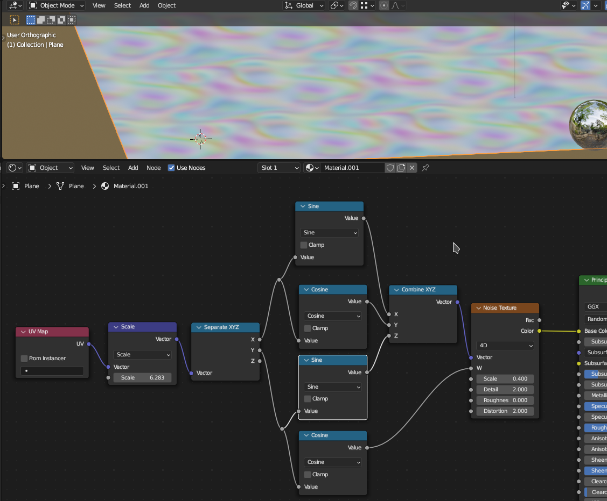

VSeeFace/VRChat
Basic shapekeys: Neutral A E I O U Fun Angry Surprised
Optional shapekeys: Joy, Sorrow, Brows up, Brows down, Blink, Blink_L, Blink_R
Misc
Seamless normals between separate meshes:
From base mesh, dupe selected area, separate into it's own object, make a vertex group for the border
vertices
Add a data transfer modifer (for face corner data + custom normals AND vertex data + weights, target
base mesh and only effect the border vertex group).
Then edit the selected bits but don't touch the border vertex group positions.
Duplicate base mesh again, separate into it's own object, delete the selected area on the dupe
Add a data transfer for vertex weights AND face corner normal data (use the base mesh as the
source).
Duplicate and apply all the modifiers when done.
Make your own HDRI skyboxes -
render resolution is 2:1 aspect ration
camera type: panoramic, panoramic type: equirectangular
rotation 90, 0, -90 (+x axis) to aim camera at center
save render as .exr or .hdr
Files
Trailcam
The compositor nodes I use for my "Scary Pics"/trailcam/security cam filtering: trailcam.blendJust append the nodegroup to your project and fiddle with all the settings in the group.
Seamless Tiling with noise
Make seamlessly tiling procedurally generated backgrounds with this material node setup.Also works with other nodes like voronoi and wave, just hook them up to either W or phase offset.
Get the sample file with the camera and lighting setup too -> seamlesstile.blend
